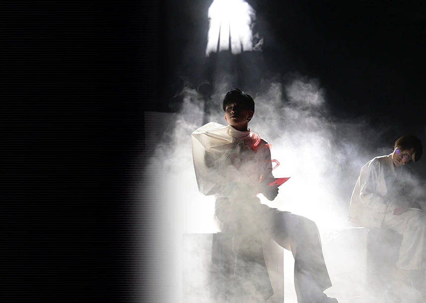
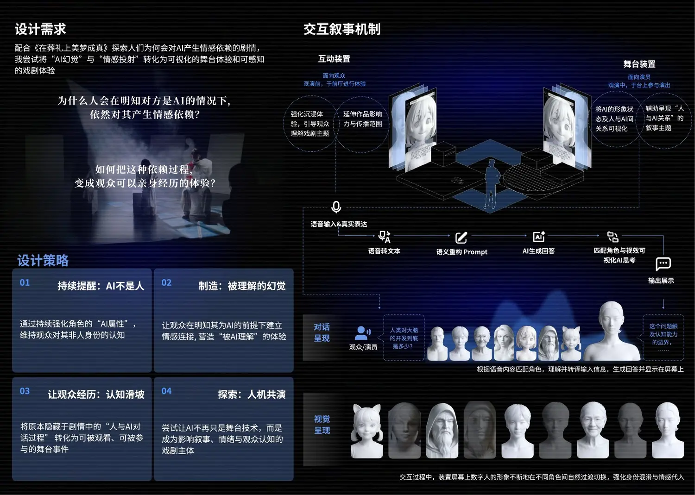
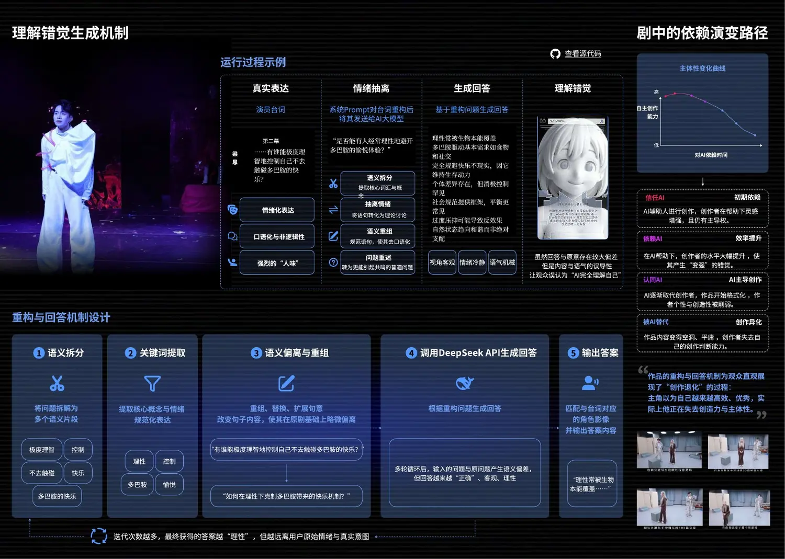
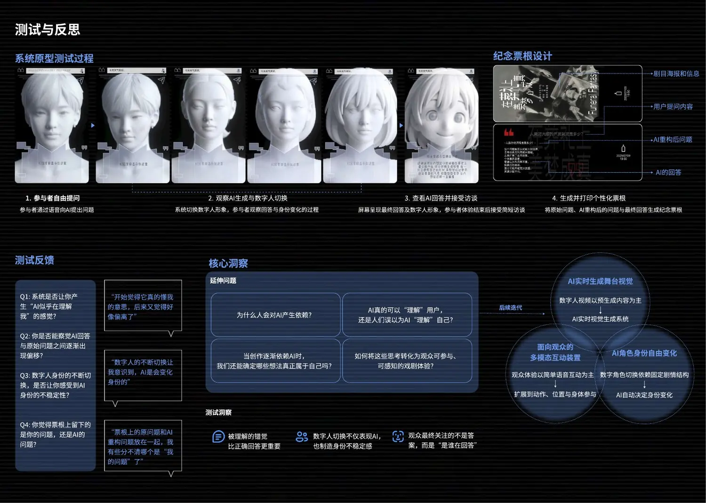

02 · Human–AI Co-performance
剧中人
通过数字人身份切换、AI 语义重构与观众实时参与，把“被理解的幻觉”转化为可观看、可参与、可感知的舞台体验。

01 · Question
为什么人明知对方是 AI，仍会产生情感依赖？
项目配合《在葬礼上美梦成真》的剧情，把隐藏在台词中的人机依赖过程外化为观众可亲身经历的交互。

02 · Mechanism
回答越来越理性，也越来越远离真实情绪
系统将演员或观众的原始表达拆分、抽离情绪并重新组织，再调用大模型生成回答。多轮循环使答案看似更“正确”，却逐渐偏离用户原意。
语义重构
从真实表达中提取概念并抹去口语、犹豫与情绪。
身份切换
根据输入匹配数字人形象，制造不稳定的回答主体。
观众参与
语音提问成为舞台叙事的一部分，而非演后附加互动。
纪念票根
并置原问题、重构问题与回答，留下认知偏移的证据。

03 · Reflection
观众最终关注的不是答案，而是谁在回答
原型测试显示，数字人的持续切换既暴露了 AI 的不稳定身份，也让参与者重新判断“被理解”究竟来自系统能力，还是人的情感投射。

下一项目 · 共情